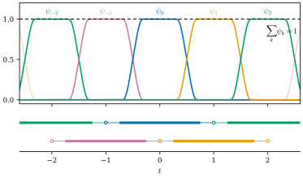
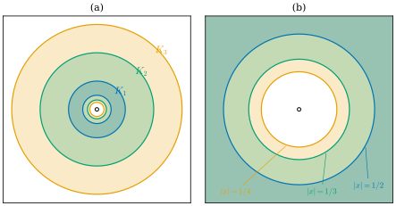

12.4 Exhaustion by Compact Sets and Partitions of Unity
Goals
- locally finite한 모임과 partition of unity를 정의하고, local finiteness이 왜 필요한지 예로 설명할 수 있다.
- Hausdorff·second countable 조건과 local compactness에서 exhaustion by compact sets를 만들 수 있다.
- smooth manifold의 모든 open cover에 종속된 smooth partition of unity가 있음을 증명하고, 증명에서 topological manifold의 세 조건이 각각 어디에 쓰이는지 설명할 수 있다.
Prerequisites
- Definition 12.3.2 (support), Lemma 12.3.4, Lemma 12.3.6 (bump function around a point), Proposition 12.3.7
- Proposition 12.1.5, Proposition 12.1.7(c) (국소성), Remark 12.1.12
- Proposition 11.1.15(b) (countable basis of coordinate balls with compact closure), Definition 11.5.1
- Proposition 3.1.16, Proposition 3.1.17 (points of the closure), Proposition 3.6.5, Proposition 3.6.15 (Lindelöf property)
Motivation
Section 12.3에서 compact set마다 bump function을 만들었다. 이것으로 chart 하나 위의 함수를 manifold 전체로 늘일 수 있었다. 그러나 많은 경우 필요한 것은 한 조각이 아니라 여러 조각을 이어 붙이는 일이다. 몇 가지 예를 보자.
- regular surface 위의 smooth function은 점마다 근처에서 \(\R^3\)의 smooth function의 제한이다(Exercise 6.3.7). 이 국소적인 확장들을 이어 붙여 \(\R^3\) 전체의 함수 하나로 만들 수 있는가?
- Chapter 18에서는 manifold 위의 적분을 정의한다. chart 하나 안에서는 \(\R^n\)의 적분으로 정의하면 되지만, 여러 chart에 걸친 대상은 조각내서 적분한 뒤 더해야 한다.
- Chapter 21에서는 모든 manifold에 Riemannian metric이 있음을 보인다. chart마다 Euclidean metric을 옮겨 오고, 이들을 섞어야 한다.
세 경우 모두 해법은 같다. open cover \(\{U_\alpha\}\)에 맞추어, support가 \(U_\alpha\)에 있고 합이 \(1\)인 함수들 \(\psi_\alpha\)를 만든다. 그러면 \(U_\alpha\)마다 만든 대상 \(f_\alpha\)를 \(\sum_\alpha \psi_\alpha f_\alpha\)로 섞을 수 있다. 이런 함수들의 모임이 partition of unity이다. cover가 무한하면 무한합을 다루어야 하므로, 먼저 무한합이 뜻을 갖는 조건을 정한다.

Local Finiteness
Definition 12.4.1 (locally finite). \(X\)가 topological space이고 \(\{A_\alpha\}_{\alpha \in \mathcal{I}}\)가 \(X\)의 부분집합들의 모임이라 하자. 모든 \(p \in X\)가 neighborhood \(W\)를 가져서 \(W \cap A_\alpha \ne \varnothing\)인 \(\alpha\)가 유한개뿐이면, \(\{A_\alpha\}\)를 locally finite(국소 유한)인 모임이라 한다.
예를 들어 \(\R\)에서 \(\{(k - 1, k + 1)\}_{k \in \Z}\)는 locally finite하다. \(p\)의 neighborhood \((p - 1, p + 1)\)은 \(\abs{k - p} \lt 2\)인 \(k\), 곧 많아야 네 개의 구간과만 만난다. 반면 \(\{(-1/k, 1/k)\}_{k \ge 1}\)은 locally finite하지 않다. \(0\)의 모든 neighborhood가 모든 구간과 만나기 때문이다. local finiteness은 공간에 달려 있다. \(\{(1/(k+1), 1/k)\}_{k \ge 1}\)은 \((0, 1)\)에서는 locally finite하지만 \(\R\)에서는 \(0\)에서 locally finite하지 않다(Exercise 12.4.1).
Lemma 12.4.2 (closure of a locally finite collection). \(\{A_\alpha\}\)가 topological space \(X\)의 locally finite한 모임이면 다음이 성립한다.
- (a) closure들의 모임 \(\{\overline{A_\alpha}\}\)도 locally finite하다.
- (b) \(\overline{\bigcup_\alpha A_\alpha} = \bigcup_\alpha \overline{A_\alpha}\)이다. 특히 locally finite한 closed set들의 합집합은 닫혀 있다.
Proof. (a) \(W\)가 open set이고 \(W \cap \overline{A_\alpha} \ne \varnothing\)이면 \(W \cap A_\alpha \ne \varnothing\)이다. \(W \cap \overline{A_\alpha}\)의 점 \(q\)에 대해 \(W\)는 \(q\)의 neighborhood이므로 \(A_\alpha\)와 만나기 때문이다(Proposition 3.1.17). \(p\)의 neighborhood \(W\)가 유한개의 \(A_\alpha\)와만 만나면 \(W\)를 open neighborhood로 바꾸어도 마찬가지이고, 그 open neighborhood는 같은 유한개의 \(\overline{A_\alpha}\)와만 만난다.
(b) 각 \(\overline{A_\alpha}\)는 \(\overline{\bigcup_\beta A_\beta}\)에 들어 있으므로 오른쪽이 왼쪽에 들어 있다(Proposition 3.1.16(d)). 거꾸로 \(x \in \overline{\bigcup_\alpha A_\alpha}\)라 하고, \(x\)의 open neighborhood \(W\)가 \(A_{\alpha_1}, \dots, A_{\alpha_m}\)과만 만난다고 하자. \(x\)가 어느 \(\overline{A_{\alpha_i}}\)에도 속하지 않는다면 \(W' = W \setminus (\overline{A_{\alpha_1}} \cup \dots \cup \overline{A_{\alpha_m}})\)은 \(x\)의 open neighborhood이고(유한개의 closed set의 합집합은 닫혀 있다) 어떤 \(A_\alpha\)와도 만나지 않는다. 이것은 Proposition 3.1.17에 어긋난다. 따라서 \(x\)는 어떤 \(\overline{A_{\alpha_i}}\)에 속한다. 마지막 주장은 \(A_\alpha\)가 닫혀 있으면 \(\overline{A_\alpha} = A_\alpha\)이기 때문이다.
local finiteness의 쓸모는 무한합을 국소적으로 유한합으로 만든다는 데 있다.
Lemma 12.4.3 (locally finite sum). \(M\)이 smooth manifold(경계가 있어도 된다)이고 \(\{f_\alpha\}\)가 \(M\) 위의 smooth \(\R^k\)-valued function들이며 \(\{\supp f_\alpha\}\)가 locally finite하다고 하자. 그러면 각 \(p\)에서 \(f_\alpha(p) \ne 0\)인 \(\alpha\)는 유한개이고, 합 \(f = \sum_\alpha f_\alpha\)는 매끄럽다.
Proof. \(p\)의 open neighborhood \(W\)가 \(\supp f_{\alpha_1}, \dots, \supp f_{\alpha_m}\)과만 만난다고 하자. 다른 \(\alpha\)에 대해서는 \(W \cap \supp f_\alpha = \varnothing\)이므로 \(f_\alpha\)가 \(W\)에서 \(0\)이다. 따라서 \(W\)의 모든 점에서 합은 유한합이고, \(W\) 위에서 \(f = f_{\alpha_1} + \dots + f_{\alpha_m}\)은 매끄럽다(Proposition 12.1.5). \(p\)는 임의였으므로 Proposition 12.1.7(c)에 의해 \(f\)는 매끄럽다.
Non-example 12.4.4 (without local finiteness, the sum need not even be continuous). \(k \ge 1\)이면 \(c_k = 1/k\)와 \(s_k = 1/(4k^2)\)에 대해 Lemma 12.3.4의 bump function \(H_k\)(\(n = 1\), \(c = c_k\), \(r_1 = s_k/2\), \(r_2 = s_k\))를 잡자. support \([c_k - s_k, c_k + s_k]\)들은 서로소이다. (\(c_k\)는 감소하고 \(\abs{c_k - c_{k+1}} = 1/(k(k+1)) \gt s_k + s_{k+1}\)이므로, support들은 오른쪽에서 왼쪽으로 차례로 놓이고 이웃한 것끼리 만나지 않는다.) 따라서 각 점에서 \(0\)이 아닌 \(H_k\)는 많아야 하나이고 \(F = \sum_k H_k\)는 점마다 잘 정의된다. 그러나 \(F(1/k) = 1\)이고 \(1/k \to 0\)인데 \(F(0) = 0\)이므로 \(F\)는 \(0\)에서 연속이 아니다. support들이 \(0\)에 쌓여서 \(0\)에서 locally finite하지 않기 때문이다.
Verification: verify/v-12-4-partitions-of-unity.py
Partitions of Unity
Definition 12.4.5 (partition of unity). \(M\)이 smooth manifold(경계가 있어도 된다)이고 \(\mathcal{U} = \{U_\alpha\}_{\alpha \in \mathcal{I}}\)가 \(M\)의 open cover라 하자. smooth function들의 모임 \(\{\psi_\alpha\}_{\alpha \in \mathcal{I}}\) (\(\psi_\alpha\colon M \to \R\))이 다음 네 조건을 만족하면 \(\mathcal{U}\)에 종속된(subordinate to \(\mathcal{U}\)) partition of unity(단위분할)이라 한다.
- (i) 모든 \(\alpha\)에 대하여 \(0 \le \psi_\alpha \le 1\)이다.
- (ii) 모든 \(\alpha\)에 대하여 \(\supp\psi_\alpha \subseteq U_\alpha\)이다.
- (iii) support들의 모임 \(\{\supp\psi_\alpha\}\)는 locally finite하다.
- (iv) 모든 \(p \in M\)에 대하여 \(\sum_\alpha \psi_\alpha(p) = 1\)이다.
(iii)에 의해 (iv)의 합은 점마다 유한합이다(Lemma 12.4.3). partition of unity는 cover와 같은 첨자를 쓴다는 데 주의하자. 첨자 \(\alpha\)의 함수는 \(\alpha\)번째 open set을 맡는다. 어떤 \(\psi_\alpha\)는 \(0\)이어도 된다.
Example 12.4.6 (examples of partitions of unity). (a) cover가 \(\{M\}\) 하나이면 \(\psi = 1\)이 partition of unity이다. \(\supp 1 = M\)이다.
(b) \(\R\)의 구간 cover. \(U_k = (k - 1, k + 1)\) (\(k \in \Z\))라 하자. Lemma 12.3.4의 bump function을 \(n = 1\), \(c = 0\), \(r_1 = 1/4\), \(r_2 = 3/4\)로 잡은 것을 \(b\)라 하면 \(b(s) = h(1/2 + 2\abs{s})\)이고 \(\supp b = [-3/4, 3/4]\)이다. \(g_k(t) = b(t - k)\)로 두면 \(\supp g_k = [k - 3/4, k + 3/4] \subseteq U_k\)이고, support들의 모임은 locally finite하다(\((p - 1/4, p + 1/4)\)는 많아야 세 개의 support와 만난다). 모든 \(t\)에서 가장 가까운 정수 \(k\)는 \(\abs{t - k} \le 1/2 \lt 3/4\)이므로 \(g_k(t) \gt 0\)이다. 따라서 \(G = \sum_k g_k\)는 매끄럽고(Lemma 12.4.3) 양수이며, \(\psi_k = g_k/G\)가 \(\{U_k\}\)에 종속된 partition of unity이다(Figure 12.4.1).
(c) sphere의 두 stereographic projection 영역. \(S^n\)을 \(U_1 = S^n \setminus \{N\}\), \(U_2 = S^n \setminus \{S\}\)로 덮자. Section 12.3의 계단 \(\lambda(s) = 1 - h(1 + s)\)로 \(\rho(t) = \lambda(t + 1/2)\)라 하면 \(\rho\)는 \(t \le -1/2\)에서 \(0\), \(t \ge 1/2\)에서 \(1\)이다. \(\psi_2(x) = \rho(x^{n+1})\), \(\psi_1 = 1 - \psi_2\)로 두면 둘 다 매끄럽고(height function이 매끄러우므로, Example 12.1.3(c)) \(0\)과 \(1\) 사이의 값을 가지며 합이 \(1\)이다. \(\{\psi_2 \ne 0\} = \{x^{n+1} \gt -1/2\}\)이므로 \(\supp\psi_2 = \{x^{n+1} \ge -1/2\} \subseteq U_2\)이고, \(\{\psi_1 \ne 0\} = \{x^{n+1} \lt 1/2\}\)이므로 \(\supp\psi_1 = \{x^{n+1} \le 1/2\} \subseteq U_1\)이다. 따라서 \(\{\psi_1, \psi_2\}\)는 \(\{U_1, U_2\}\)에 종속된 partition of unity이다.
Verification: verify/v-12-4-partitions-of-unity.py
이 예들은 특별한 식(구간의 규칙성, 전역 좌표 \(x^{n+1}\))에 기대었다. 일반적인 manifold와 일반적인 open cover에서는 이런 식이 없다. 다음 두 소절에서 식 없이 partition of unity를 만든다. 전략은 이렇다. manifold를 커져 가는 compact set들로 차례로 덮고(exhaustion by compact sets), compact set 하나를 둘러싼 “고리” 모양 조각마다 bump function을 유한개 둔다.
Exhaustion by Compact Sets
먼저 manifold의 모든 점이 “작은 compact neighborhood”를 가진다는 것을 확인하자. 이 절에서 \(D\)는 Section 12.3처럼 chart의 모형 공간 \(\R^n\) 또는 \(\mathbb{H}^n\)이다.
Lemma 12.4.7 (neighborhood with compact closure). \(M\)이 topological manifold이거나 topological manifold with boundary이면, \(M\)의 모든 점은 closure가 compact한 open neighborhood를 가진다.
Proof. 경계가 없으면 Proposition 11.1.15(b)의 basis에서 그 점을 포함하는 원소를 고르면 된다. 일반적인 경우도 같은 생각이다. \(p\) 둘레의 chart \((U, \varphi)\)를 잡으면 Lemma 12.3.6의 증명 1, 2단계처럼 \(\varepsilon \gt 0\)이 있어서 \(B_\varepsilon(\varphi(p)) \cap D \subseteq \varphi(U)\)이고, \(C = \varphi^{-1}\big(\overline{B}_{\varepsilon/2}(\varphi(p)) \cap D\big)\)는 compact하며 닫혀 있다. \(V = \varphi^{-1}\big(B_{\varepsilon/2}(\varphi(p)) \cap D\big)\)는 \(p\)의 open neighborhood이고 \(V \subseteq C\)이므로 \(\overline{V} \subseteq C\)이다(Proposition 3.1.16(d)). compact set의 closed subset이므로 \(\overline{V}\)는 compact하다(Proposition 3.6.5(a)).
Hausdorff space의 모든 점이 closure가 compact한 neighborhood를 가지면 그 공간을 locally compact(국소 컴팩트)라 한다. Lemma 12.4.7은 (경계를 갖는) topological manifold가 locally compact하다는 뜻이다. 이제 이런 neighborhood들을 셀 수 있는 개수만큼 모아 manifold를 차례로 채운다.
Definition 12.4.8 (exhaustion by compact sets). topological space \(M\)의 compact subset들 \(K_1, K_2, \dots\)과 open set들 \(V_1, V_2, \dots\)이 모든 \(j \ge 1\)에 대하여
를 만족하면, 이 열 \((K_j, V_j)_{j \ge 1}\)을 \(M\)의 exhaustion by compact sets(컴팩트 소진)이라 한다.
(12.4.1)에서 \(V_1 \subseteq K_1 \subseteq V_2 \subseteq K_2 \subseteq \cdots\)이므로 두 열은 모두 증가하고, \(\bigcup_j V_j = M\)이다. 요점은 각 \(K_j\)가 다음 단계의 open set \(V_{j+1}\) 안에 들어간다는 것이다. 그래서 모든 compact set \(C \subseteq M\)은 어떤 \(K_m\)에 들어간다. 증가하는 open cover \(\{V_j\}\)의 유한개가 \(C\)를 덮으므로 가장 큰 것 \(V_m\)이 \(C\)를 덮고, \(V_m \subseteq K_m\)이다.
Example 12.4.9 (examples of exhaustions by compact sets). (a) \(M\)이 compact하면 \(K_j = V_j = M\)이 exhaustion by compact sets이다.
(b) \(\R^n\)에서 \(K_j = \overline{B}_j(0)\), \(V_j = B_j(0)\)은 exhaustion by compact sets이다. \(\overline{B}_j(0) \subseteq B_{j+1}(0)\)이고 모든 점은 어떤 ball에 들어간다.
(c) \(\R\)에서 \(K_j = [-j, 0] \cup [1/j, j]\)는 compact set의 증가하는 열이고 합집합이 \(\R\)이지만, (12.4.1)을 만족하는 open set \(V_j\)는 없다. \(0 \in K_1\)인데 \(0\)의 어떤 neighborhood도 \(K_{j}\)에 들어가지 않기 때문이다. 실제로 compact set \([0, 1]\)은 어느 \(K_j\)에도 들어가지 않는다. exhaustion by compact sets의 조건은 “증가하고 모두를 덮는다”보다 강하다.
Example 12.4.10 (the punctured plane). \(M = \R^2 \setminus \{0\}\)에서 \(K_j = \{x : 1/(j+1) \le \abs{x} \le j\}\), \(V_j = \{x : 1/(j+1) \lt \abs{x} \lt j\}\)로 두자. \(K_j\)는 \(\R^2\)에서 닫혀 있고 bounded이며 원점을 포함하지 않으므로 \(M\)의 compact subset이고, \(V_j\)는 \(M\)에서 열려 있다. \(1/(j+2) \lt 1/(j+1)\)이고 \(j \lt j + 1\)이므로 \(V_j \subseteq K_j \subseteq V_{j+1}\)이다. \(x \ne 0\)이면 \(1/(j+1) \le \abs{x} \le j\)인 \(j\)가 있으므로 \(\bigcup_j K_j = M\)이다. 원점이 빠져 있으므로 \(K_j\)는 무한대 쪽과 원점 쪽으로 동시에 자라야 한다(Figure 12.4.2).

Proposition 12.4.11 (existence of exhaustions by compact sets). topological manifold와 topological manifold with boundary는 exhaustion by compact sets를 가진다.
이 명제가 말하는 것. manifold는 compact하지 않아도 “셀 수 있는 단계”에 걸쳐 compact 조각으로 다 채울 수 있다. 셀 수 있다는 점은 second countable 조건에서, 조각의 compactness는 locally Euclidean 조건과 Hausdorff 조건에서 온다.
Proof idea: closure가 compact한 open set들로 \(M\)을 셀 수 있는 개수로 덮는다(Lindelöf). \(K_j\)가 정해지면, 그것을 덮는 데 필요한 만큼(그리고 적어도 \(j+1\)개) 앞에서부터 모아 다음 단계로 삼는다.
Proof. Lemma 12.4.7에 의해 closure가 compact한 open set들이 \(M\)을 덮는다. \(M\)은 second countable이므로 이 cover는 countable subcover \(\{W_i\}_{i \ge 1}\)을 가진다(Proposition 3.6.15). 유한개이면 같은 집합을 되풀이해서 무한열로 만든다. (경계가 없으면 Proposition 11.1.15(b)의 countable basis를 그대로 \(\{W_i\}\)로 써도 된다.)
자연수 \(m_1 \lt m_2 \lt \cdots\)을 귀납적으로 고른다. \(m_1 = 1\)이라 하자. \(m_j\)가 정해졌을 때 \(K_j = \overline{W_1} \cup \dots \cup \overline{W_{m_j}}\)로 두면, 유한개의 compact set의 합집합이므로 \(K_j\)는 compact하다(Proposition 3.6.5(d)). \(\{W_i\}\)는 \(K_j\)를 덮으므로 유한개가 \(K_j\)를 덮는다. 그 첨자들과 \(m_j\)보다 큰 수 \(m\)을 고르고, \(m_{j+1}\)을 \(m\)과 그 첨자들 가운데 가장 큰 수로 두면 \(K_j \subseteq W_1 \cup \dots \cup W_{m_{j+1}}\)이다. \(V_j = W_1 \cup \dots \cup W_{m_j}\)로 두자. 그러면 \(V_j\)는 열려 있고, \(V_j \subseteq K_j\)이며, 방금 본 것에서 \(K_j \subseteq V_{j+1}\)이다. \(m_j \ge j\)이므로 \(W_j \subseteq V_j \subseteq K_j\)이고, 따라서 \(\bigcup_j K_j \supseteq \bigcup_j W_j = M\)이다.
Existence of Partitions of Unity
Theorem 12.4.12 (existence of partitions of unity). \(M\)이 smooth manifold(경계가 있어도 된다)이면 \(M\)의 모든 open cover \(\mathcal{U} = \{U_\alpha\}_{\alpha \in \mathcal{I}}\)에 대하여 \(\mathcal{U}\)에 종속된 smooth partition of unity가 있다.
이 정리가 말하는 것. 어떤 open cover를 주더라도, 각 open set에 하나씩 맡겨 합이 \(1\)이 되는 smooth function들을 만들 수 있다. cover의 원소가 셀 수 없이 많아도, 서로 얽혀 있어도 된다.
Proof idea: exhaustion by compact sets \((K_j, V_j)\)로 \(M\)을 “고리” \(A_j = K_j \setminus V_{j-1}\)들로 나눈다. compact한 고리마다 bump function을 유한개 두되, support가 이웃 고리 근처를 벗어나지 않게 한다. 그러면 전체가 locally finite하다. bump function들의 합으로 나누어 합을 \(1\)로 맞추고, 마지막으로 같은 \(U_\alpha\)에 속한 것끼리 묶어 첨자를 cover의 첨자로 바꾼다.
Proof. Proposition 12.4.11의 exhaustion by compact sets \((K_j, V_j)_{j \ge 1}\)을 잡고 \(K_0 = K_{-1} = V_0 = \varnothing\)으로 둔다.
1단계: 고리. \(j \ge 1\)에 대하여 \(A_j = K_j \setminus V_{j-1}\), \(O_j = V_{j+1} \setminus K_{j-2}\)로 두자.
- \(A_j = K_j \cap (M \setminus V_{j-1})\)은 compact set \(K_j\)의 closed subset이므로 compact하다(Proposition 3.6.5(a)).
- \(K_{j-2}\)는 compact하고 \(M\)은 Hausdorff이므로 \(K_{j-2}\)는 닫혀 있고(Proposition 3.6.5(b)), 따라서 \(O_j\)는 열려 있다.
- \(A_j \subseteq O_j\)이다. \(A_j \subseteq K_j \subseteq V_{j+1}\)이고, \(K_{j-2} \subseteq V_{j-1}\)인데 \(A_j\)는 \(V_{j-1}\)과 만나지 않기 때문이다.
- \(\bigcup_j A_j = M\)이다. \(x \in M\)이면 \(x \in K_j\)인 가장 작은 \(j\)가 있고, \(x \notin K_{j-1} \supseteq V_{j-1}\)이므로 \(x \in A_j\)이다.
2단계: bump function 고르기. \(j \ge 1\)이고 \(p \in A_j\)라 하자. \(\mathcal{U}\)가 cover이므로 \(p \in U_{\alpha}\)인 \(\alpha\)가 있고, 그런 \(\alpha\)를 하나 골라 \(\alpha(p)\)로 쓴다. Lemma 12.3.6을 \(p\)와 open set \(U_{\alpha(p)} \cap O_j\)에 쓰면, \(p\)의 open neighborhood \(W_p\)와 smooth \(g_p\colon M \to [0, 1]\)이 있어서 \(W_p\)에서 \(g_p \equiv 1\)이고 \(\supp g_p\)는 \(U_{\alpha(p)} \cap O_j\)에 들어 있는 compact set이다. \(A_j\)가 compact하므로 유한개의 점 \(p_{j,1}, \dots, p_{j,l_j}\)의 \(W_{p_{j,l}}\)이 \(A_j\)를 덮는다. 이렇게 모든 \(j\)에서 고른 함수들을 한 줄로 늘어놓아 \(g_1, g_2, \dots\)라 하고, \(g_i\)에 붙은 첨자 \(\alpha(p)\)를 \(\alpha(i)\)로 쓴다. 함수는 셀 수 있을 만큼만 있다.
3단계: local finiteness. \(x \in M\)이면 어떤 \(m\)에 대해 \(x \in V_m\)이다. \(g_i\)가 \(j\)단계에서 골라졌고 \(j \ge m + 2\)이면, \(\supp g_i \subseteq O_j \subseteq M \setminus K_{j-2}\)이고 \(V_m \subseteq K_m \subseteq K_{j-2}\)이므로 \(V_m \cap \supp g_i = \varnothing\)이다. 따라서 \(x\)의 open neighborhood \(V_m\)은 \(j \le m + 1\)단계의 support, 곧 유한개의 support하고만 만난다. \(\{\supp g_i\}\)는 locally finite하다.
4단계: 합으로 나누기. Lemma 12.4.3에 의해 \(G = \sum_i g_i\)는 매끄럽다. \(x \in M\)이면 1단계에서 \(x \in A_j\)인 \(j\)가 있고, 2단계에서 \(x \in W_{p_{j,l}}\)인 \(l\)이 있어서 그 함수는 \(x\)에서 \(1\)이다. 모든 \(g_i \ge 0\)이므로 \(G(x) \ge 1\)이다. 따라서 \(\tilde\psi_i = g_i/G\)는 매끄럽고(Proposition 12.1.5) \(0 \le \tilde\psi_i \le 1\), \(\supp\tilde\psi_i = \supp g_i\), \(\sum_i \tilde\psi_i = 1\)이다.
5단계: 첨자 바꾸기. \(\alpha \in \mathcal{I}\)마다
로 둔다(해당하는 \(i\)가 없으면 \(\psi_\alpha = 0\)). locally finite한 모임의 부분모임은 locally finite하므로 \(\psi_\alpha\)는 매끄럽고(Lemma 12.4.3), \(0 \le \psi_\alpha \le \sum_i \tilde\psi_i = 1\)이다. \(\{\psi_\alpha \ne 0\} \subseteq \bigcup_{\alpha(i) = \alpha} \supp g_i\)이고, 오른쪽은 locally finite한 closed set들의 합집합이므로 닫혀 있다(Lemma 12.4.2(b)). 따라서 \(\supp\psi_\alpha \subseteq \bigcup_{\alpha(i) = \alpha} \supp g_i \subseteq U_\alpha\)이다. \(V_m\)이 \(\supp\psi_\alpha\)와 만나면 \(\alpha(i) = \alpha\)인 어떤 \(\supp g_i\)와 만나는데, 3단계에서 그런 \(i\)는 유한개이므로 그런 \(\alpha\)도 유한개다. 곧 \(\{\supp\psi_\alpha\}\)는 locally finite하다. 마지막으로 각 \(i\)는 꼭 하나의 \(\alpha\)에 속하므로, 점마다 유한합을 다시 묶어 \(\sum_\alpha \psi_\alpha = \sum_i \tilde\psi_i = 1\)이다.
Remark 12.4.13 (what the proof uses, and paracompactness). 증명을 되돌아보면 topological manifold의 세 조건이 모두 쓰였다. locally Euclidean 조건은 chart로 bump function과 compact한 neighborhood를 만드는 데(Lemma 12.3.6, Lemma 12.4.7), second countable 조건은 exhaustion by compact sets를 셀 수 있는 단계로 만드는 데(Lindelöf property), Hausdorff 조건은 compact set이 닫혀 있다는 것(bump function을 \(0\)으로 늘이기, \(O_j\)가 열려 있음)에 쓰였다. Hausdorff 조건이 없으면 정리가 틀릴 수 있다(Exercise 12.4.5).
또 증명의 3, 4단계는 open set들 \(\{g_i \ne 0\}\)이 \(M\)을 덮고, 각각 cover의 어떤 원소 \(U_{\alpha(i)}\)에 들어 있으며, locally finite하다는 것을 보여 준다. 모든 open cover에 대해 이런 open cover(각 원소가 원래 cover의 어떤 원소에 들어 있고 locally finite한 open cover)가 있는 Hausdorff space를 paracompact(파라컴팩트)라 한다. 따라서 (경계를 갖는) smooth manifold는 paracompact하다. 이 study set에서는 paracompactness 자체를 쓰지 않고 Theorem 12.4.12만 쓴다. 증명의 4단계까지가 준 셀 수 있는 개수의 \(\tilde\psi_i\)는 support가 모두 compact한 partition of unity라는 것도 기억해 두자(첨자가 cover와 다를 뿐이다).
Summary
- 부분집합들의 모임이 locally finite하면 모든 점 근처에서 유한개만 보인다. support가 locally finite한 smooth function들의 합은 매끄럽다. locally finite하지 않으면 합이 연속조차 아닐 수 있다.
- open cover \(\{U_\alpha\}\)에 종속된 partition of unity는 \(0 \le \psi_\alpha \le 1\), \(\supp\psi_\alpha \subseteq U_\alpha\), support가 locally finite, \(\sum_\alpha\psi_\alpha = 1\)인 smooth function들이다.
- (경계를 갖는) topological manifold는 locally compact하고, Lindelöf property로 exhaustion by compact sets \(V_j \subseteq K_j \subseteq V_{j+1}\)을 가진다.
- smooth manifold의 모든 open cover에 종속된 smooth partition of unity가 있다(Theorem 12.4.12). locally Euclidean·second countable·Hausdorff 조건이 모두 쓰인다.
다음 절에서는 partition of unity를 써서 국소적인 대상을 이어 붙인다. closed set의 bump function, closed set 위의 smooth function의 확장(특히 regular surface 위의 함수를 \(\R^3\) 전체로 늘이기), 그리고 exhaustion function을 만든다.
Exercises
Exercise 12.4.1 ★ 다음 모임이 주어진 공간에서 locally finite한지 판정하여라. (a) \(\{[k, k + 1]\}_{k \in \Z}\), \(\R\)에서 (b) \(\{(1/(k+1), 1/k)\}_{k \ge 1}\), \((0, 1)\)에서, 그리고 \(\R\)에서 (c) \(\{S^1 \setminus \{e(2\pi/k)\}\}_{k \ge 1}\), \(S^1\)에서 (\(e(t) = (\cos t, \sin t)\))
Solution
(a) locally finite하다. \(p\)의 neighborhood \((p - 1/2, p + 1/2)\)은 많아야 세 구간과 만난다. (b) \((0, 1)\)에서는 locally finite하다. \(p \in (0, 1)\)이면 \(1/(k+1) \lt p/2\)인 \(k\)에 대해 구간 \((1/(k+1), 1/k)\)은 \(p\)의 neighborhood \((p/2, 1)\)과 만나지 않으므로 만나는 구간은 유한개다. \(\R\)에서는 \(0\)의 모든 neighborhood \((-\varepsilon, \varepsilon)\)이 \(1/k \lt \varepsilon\)인 모든 구간과 만나므로 locally finite하지 않다. (c) locally finite하지 않다. 각 원소가 원 전체에서 한 점만 뺀 것이므로 모든 공집합이 아닌 open set이 모든 원소와 만난다.
Exercise 12.4.2 ★ 열린구간 \(M = (0, 1)\)의 exhaustion by compact sets를 하나 식으로 주고 (12.4.1)을 확인하여라.
Solution
\(K_j = [1/(j+2),\ 1 - 1/(j+2)]\), \(V_j = (1/(j+2),\ 1 - 1/(j+2))\)로 두자. \(K_j\)는 닫힌구간이므로 compact하고 \(V_j\)는 열려 있다. \(V_j \subseteq K_j\)이고, \(1/(j+3) \lt 1/(j+2)\)이므로 \(K_j \subseteq V_{j+1}\)이다. \(x \in (0, 1)\)이면 \(1/(j+2) \le \min(x, 1 - x)\)인 \(j\)가 있으므로 \(x \in K_j\)이다.
Verification: verify/v-12-4-partitions-of-unity.py
Exercise 12.4.3 ★ 참인지 거짓인지 판별하고 이유를 써라. (a) compact 공간에서 공집합이 아닌 집합들의 locally finite한 모임은 유한하다. (b) partition of unity의 모든 \(\psi_\alpha\)는 어딘가에서 \(0\)이 아니다. (c) 주어진 open cover에 종속된 partition of unity는 하나뿐이다.
Solution
(a) 참. 모든 점이 유한개의 원소와만 만나는 open neighborhood를 가지고, 이 neighborhood들의 유한개가 공간을 덮는다. 각 원소는 공집합이 아니므로 그 가운데 어떤 neighborhood와 만나고, 따라서 원소는 유한개다. (b) 거짓. cover \(\{M, M\}\)에 대해 \(\psi_1 = 1\), \(\psi_2 = 0\)은 partition of unity이다. (c) 거짓. cover \(\{M, M\}\)에 대해 \((\psi_1, \psi_2) = (1, 0)\), \((0, 1)\), \((1/2, 1/2)\)이 모두 partition of unity이다. 두 원소가 겹치는 cover에서는 보통 partition of unity가 무수히 많다. 예를 들어 \(\{\psi_\alpha\}\)와 \(\{\psi'_\alpha\}\)가 partition of unity이면 \(0 \le t \le 1\)에 대해 \(\{t\psi_\alpha + (1 - t)\psi'_\alpha\}\)도 partition of unity이다.
Exercise 12.4.4 ★ Example 12.4.6(b)에서 \(G = \sum_k g_k\)가 주기 \(1\)인 함수(\(G(t + 1) = G(t)\))이고, \(\psi_0(t) = 1\)인 \(t\)의 집합이 \([-1/4, 1/4]\)임을 보여라.
Solution
\(G(t + 1) = \sum_k b(t + 1 - k) = \sum_{k'} b(t - k')\) (\(k' = k - 1\))이므로 주기 \(1\)이다. \(\psi_0(t) = 1\)은 \(g_0(t) = G(t)\), 곧 \(k \ne 0\)인 모든 \(g_k(t) = 0\)이고 \(g_0(t) \gt 0\)이라는 뜻이다. \(g_0(t) \gt 0\)이면 \(\abs{t} \lt 3/4\)이고, 이 범위에서 \(g_{\pm 1}(t) = 0\)은 \(\abs{t \mp 1} \ge 3/4\), 곧 \(t \le 1/4\)이고 \(t \ge -1/4\)이다. 이때 \(\abs{t} \le 1/4\)이므로 다른 \(g_k\)도 \(0\)이고 \(g_0(t) = b(t) = 1 \gt 0\)이다. 거꾸로 \(\abs{t} \gt 1/4\)이면 \(g_1\)이나 \(g_{-1}\)이 \(t\)에서 양수이므로 \(\psi_0(t) \lt 1\)이다.
Verification: verify/v-12-4-partitions-of-unity.py
Exercise 12.4.5 ★★ 원점이 두 개인 직선 \(L\)(Non-example 3.5.6, Exercise 11.2.5)의 open cover \(\{V_1, V_2\}\)(\(V_k\)는 \(0_k\)를 포함하고 다른 원점은 포함하지 않는다)에 대해, \(\psi_1 + \psi_2 = 1\), \(\supp\psi_k \subseteq V_k\)인 연속함수 \(\psi_1, \psi_2\colon L \to [0, 1]\)이 없음을 보여라. Hausdorff 조건 없이는 Theorem 12.4.12가 성립하지 않는다.
Hint
수열 \([1/j]\)는 \(0_1\)과 \(0_2\)에 동시에 수렴한다.
Solution
그런 \(\psi_1, \psi_2\)가 있다고 하자. \(0_2 \notin V_1 \supseteq \supp\psi_1\)이므로 \(\psi_1(0_2) = 0\)이고, 같은 이유로 \(\psi_2(0_1) = 0\)이다. 따라서 \(\psi_1(0_1) = 1 - \psi_2(0_1) = 1\)이다. 수열 \(x_j = [1/j]\)는 \(0_1\)과 \(0_2\)에 모두 수렴한다(두 원점의 모든 neighborhood가 \(0\)이 아닌 작은 실수들을 포함한다, Non-example 3.5.6). 연속함수는 수렴하는 수열을 수렴하는 수열로 보내므로(Proposition 3.2.17) \(\psi_1(x_j) \to \psi_1(0_1) = 1\)이고 동시에 \(\psi_1(x_j) \to \psi_1(0_2) = 0\)이다. \(\R\)에서 수열의 극한은 하나이므로 모순이다. (\(L\)은 locally Euclidean이고 second countable이지만 Hausdorff space가 아니다. Theorem 12.4.12의 증명에서 Hausdorff 조건이 쓰인 곳, 곧 compact set이 닫혀 있다는 것이 \(L\)에서는 성립하지 않는다.)
Exercise 12.4.6 ★★ \(M\)이 compact한 smooth manifold일 때, exhaustion by compact sets를 쓰지 않고 Lemma 12.3.6만으로 Theorem 12.4.12를 증명하여라.
Solution
\(p \in M\)마다 \(p \in U_{\alpha(p)}\)인 \(\alpha(p)\)를 고르고 Lemma 12.3.6을 \(p\)와 \(U_{\alpha(p)}\)에 써서 \(W_p\), \(g_p\)를 얻는다. \(M\)이 compact하므로 유한개 \(W_{p_1}, \dots, W_{p_m}\)이 \(M\)을 덮는다. \(G = g_{p_1} + \dots + g_{p_m}\)은 매끄럽고 모든 점에서 \(1\) 이상이다. \(\tilde\psi_l = g_{p_l}/G\)와 \(\psi_\alpha = \sum_{l : \alpha(p_l) = \alpha} \tilde\psi_l\)로 두면, 유한개의 함수만 \(0\)이 아니므로 support는 자명하게 locally finite하고, \(\supp\psi_\alpha\)는 유한개의 \(\supp g_{p_l} \subseteq U_\alpha\)의 합집합(닫혀 있음)에 들어 있다. 나머지 조건은 정리의 4, 5단계와 같다.
Exercise 12.4.7 ★★ \(F\colon N \to M\)이 매끄럽고 \(\{\psi_\alpha\}\)가 \(M\)의 open cover \(\{U_\alpha\}\)에 종속된 partition of unity이면, \(\{\psi_\alpha \circ F\}\)는 \(N\)의 open cover \(\{F^{-1}(U_\alpha)\}\)에 종속된 partition of unity임을 보여라.
Solution
\(F\)가 연속이므로 \(F^{-1}(U_\alpha)\)는 열려 있고 \(N\)을 덮는다. \(\psi_\alpha \circ F\)는 매끄럽고(Proposition 12.1.7(d)) 값이 \([0, 1]\)에 있으며 합이 \(1\)이다. \(\{\psi_\alpha \circ F \ne 0\} = F^{-1}(\{\psi_\alpha \ne 0\}) \subseteq F^{-1}(\supp\psi_\alpha)\)이고 오른쪽은 닫혀 있으므로 \(\supp(\psi_\alpha \circ F) \subseteq F^{-1}(\supp\psi_\alpha) \subseteq F^{-1}(U_\alpha)\)이다. \(q \in N\)이면 \(F(q)\)의 open neighborhood \(W\)가 유한개의 \(\supp\psi_\alpha\)와만 만나므로, \(q\)의 open neighborhood \(F^{-1}(W)\)도 유한개의 \(F^{-1}(\supp\psi_\alpha)\), 따라서 유한개의 \(\supp(\psi_\alpha \circ F)\)와만 만난다.